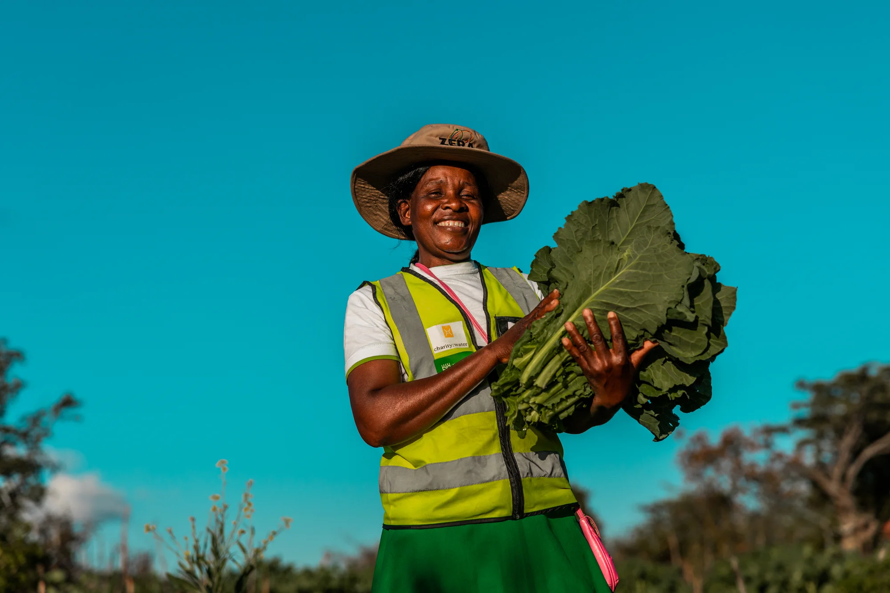

Clean water is a present-day issue.
This page presents calm, real-time context around global water access. It is designed to be informative, ambient, and grounded in reality.


This page presents calm, real-time context around global water access. It is designed to be informative, ambient, and grounded in reality.
Every donation directly funds water projects that transform lives. Your support brings clean water to communities in need.
Clean water transforms health, education, and economic opportunity. When families have access to safe, reliable water, entire communities thrive.
Clean water prevents waterborne diseases and reduces child mortality, enabling families to live healthier, longer lives.
When students don't spend hours collecting water, they attend school more regularly and have time to learn and grow.
Access to clean water frees time and resources for work and entrepreneurship, lifting entire communities out of poverty.
charity: water builds direct partnerships with local communities to bring clean water and sanitation to the world's poorest regions. Every project is GPS-verified and transparently tracked. We give 100% of donations directly to water projects—overhead is covered by private donations.